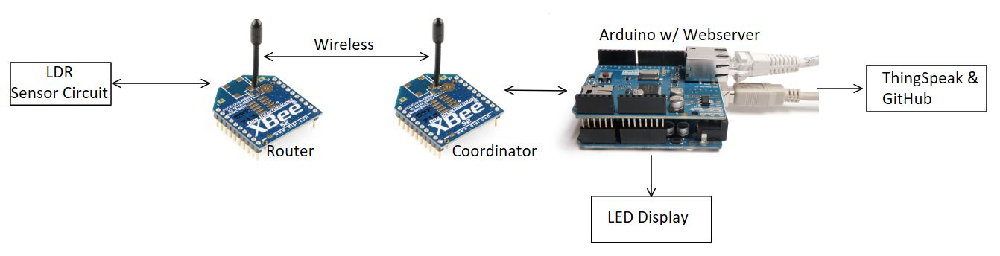

For this project measured light level using an LDR, recorded it and posted it to my website. The network is a simple point-to-point network between a Coordinator and Router that communicates between one another. To set up the network Coordinator and Router I used two Series-2 XBee Transceivers. The sensor (LDR) sends data from the remote router, to the coordinator and finally posts the data to a web server. The Web Server is run on an Arduino UNO and connected to an Ethernet network via an Arduino Ethernet Shield. Using an XBee Webserver sketch, from a device that is on the same network as the Arduino, browse to automatically set IP you should see the data displayed. Additionally, data is also posted to a GitHub website by means of a free cloud-based service called ThingSpeak for a visual representation of the data.
